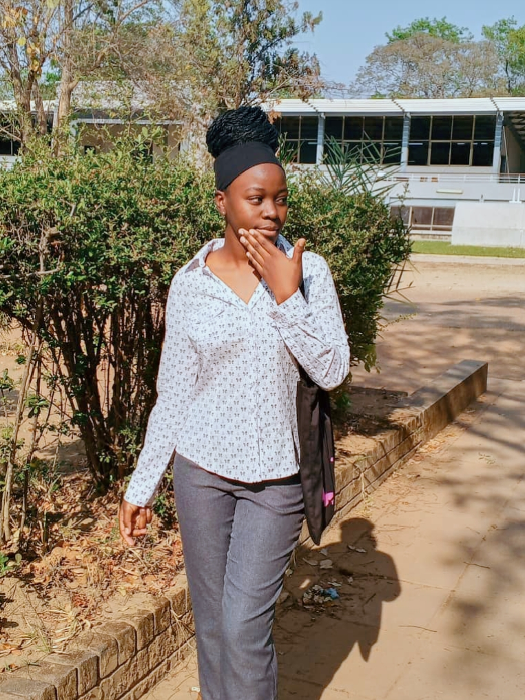

My journey as a Cyber Security student.
Hello! My name is Catherine Kaliki, i'm a University student studying Cyber Security. I am interested in technology and learning how computers, networks and websites work. I am currently learning web development using HTML and CSS. I hope to improve my Programmin skills by practising regularly and building my own websites. My goal is to become a skilled Cyber Security Professional and become confident in creating useful and attractive web pages.
| Day | Topic | Practice Task |
|---|---|---|
| Monday | HTML | Create a webpage. |
| wednesday | CSS | Style a webpage. |
| Friday | HTML & CSS | Build a website. |
Learn more at MDN Web Development .

My introduction video and audio recording.
written audio summary: Hello! my name is Catherine Kaliki. I am a Cyber Security student. In this web technology course , i hope to master a skill of creating websites.
this voice log describes my core motivation for picking up secure web configuration tracks.
Use the form below to write a message.